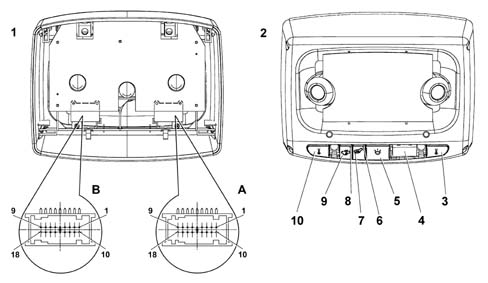

ROOF NODE (NIM)
- Path
- Descriptions > 55 ELECTRICAL EQUIPMENT > 5505 INSTRUMENT/GAUGE ELECTRICAL CIRCUITS > 5505A multi-function components > ROOF NODE (NIM)
- Kind
- system description
- Applies to
- all engines; all production periods
- Interactive page
- https://sloeber94.github.io/elrnDB-lThss/en/#/174973
Applies to: all engines; all production periods
SPECIFICATIONS
The Roof Node is an electronic and electro-mechanical control unit that integrates the functions located in the interior mirror and the courtesy light

- 1 - Rear view
- 2 - Front view
- 3 - Button for left spot light
- 4 - Microphone covers
- 5 - Button for courtesy light
- 6 - Function warning light (LED)
- 7 - Button for anti-theft device (vehicle tilt prevention)
- 8 - Function warning light (LED)
- 9 - Button for anti-theft device (volumetric sensors inhibition)
- 10 - Button for right spot light
OPERATION
The Roof Node carries out the following functions:
- Activation of side lights and dipped headlamps by dusk sensor [F044]
- Management of courtesy lights and front and rear spot lights [F078]
- US volumetric protection of passenger compartment (which can be excluded) [F080]
- Rain sensor acquisition [F114]
- Electro-chromic interior mirror [F128]
- Management of gear lever and rear armrest lighting [F220]
- Activation of alarm by tilt sensor [F233]
In addition it:
- receives and transmits information on the B-CAN line (e.g.: diagnosis, warnings, commands, data)
- integrates the volumetric/tilt sensors
- integrates the courtesy light controls (unstable type)
- integrates the hands-free telephone microphone
- connects with the rear wiring and the wiring at the interior rear view mirror
Connector A PIN OUT
PIN | FUNCTION |
|---|---|
1 | Earth |
2 | Electro-chromic exterior mirrors - Positive |
3 | Electro-chromic exterior mirrors - Negative |
4 | A-bus serial line |
5 | Not connected |
6 | Not connected |
7 | B - CAN A |
8 | Not connected |
9 | Microphone output (ref) to NIT |
10 | +30 from F-39 CPL |
11 | Not connected |
12 | Not connected |
13 | Not connected |
14 | Not connected |
15 | Negative signal controlling night panel function LED in centre rear courtesy light |
16 | B - CAN B |
17 | Not connected |
18 | Microphone output to NIT |
Connector B PIN OUT
PIN | FUNCTION |
|---|---|
1 | Not connected |
2 | A-bus serial line to rain/dusk sensor |
3 | Not connected |
4 | Electro-chromic exterior mirrors - Negative |
5 | Electro-chromic exterior mirrors - Positive |
6 | Not connected |
7 | Not connected |
8 | Rain/dusk sensor (negative) |
9 | Electro-chromic interior rear view mirror (negative) |
10 | Not connected |
11 | Not connected |
12 | Rain/dusk sensor (positive) |
13 | Electro-chromic interior rear view mirror (positive) |
14 | Not connected |
15 | Not connected |
16 | Electro-chromic interior rear view mirror (reversing signal) |
17 | Not connected |
18 | Not connected |